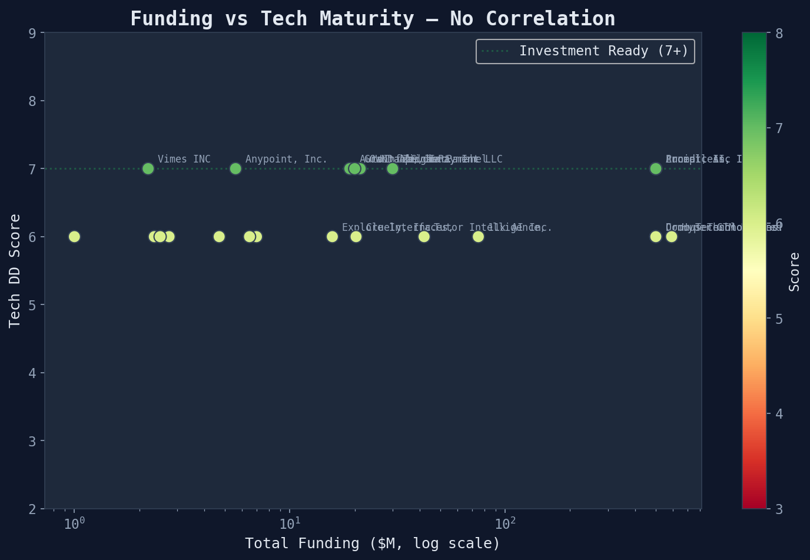
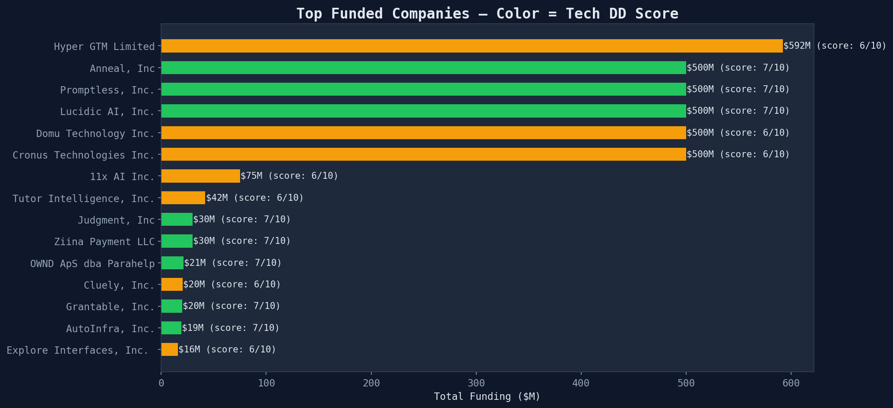

Delve Tech Due Diligence · Meta-Analysis
Does more money mean better tech? Investor patterns across 27 researched companies
$3400M
Total Identifiable Funding
Funding Does NOT Predict Tech Maturity
Perhaps the most counterintuitive finding of this analysis: there is no meaningful correlation
between funding level and tech DD score.

Each dot is a company. Color = tech DD score. X-axis is log scale.
The highest-scoring company (Scribeberry, 8/10) appears to be bootstrapped. The highest-funded company (11x AI, $75M+) scores 6/10. Money buys speed, marketing, and headcount — but it doesn't automatically buy infrastructure maturity or security depth.
This has practical implications for diligence: a company's fundraising history tells you about
market validation and investor confidence, but it tells you nothing about whether they have WAF,
multi-region failover, or named monitoring tools. Tech DD and funding DD are orthogonal signals
that must be evaluated independently.
Top Funded Companies

Bar color indicates tech DD score (green = 7+, yellow = 5-6, red = 3-4)
| Company | Funding | Score | Product |
|---|
| Hyper GTM Limited | $592K | 6/10 | hyperGTM — AI account-based marketing |
| Anneal, Inc | ~$500K+ (YC) | 7/10 | Dialtone — AI agent platform for enterpr |
| Promptless, Inc. | $500K | 7/10 | AI auto-updates customer-facing document |
Investor Landscape
Y Combinator dominates this cohort with 10 of 27 researched companies.
a16z backs 3 companies (11x AI and Cluely). Kleiner Perkins backs 2
(Conway and Antes AI).
Key Patterns
- YC is the common thread — 10/27 companies are YC alumni. The YC network effect is visible in both deal flow and compliance timing (many get SOC 2 within months of demo day).
- a16z bets on GTM AI — both 11x (AI SDR) and Cluely (AI coaching) are sales/productivity tools
- Kleiner Perkins goes vertical — Conway (risk ops) and Antes AI (manufacturing compliance) are vertical AI plays
- Revenue-funded outliers — AfterQuery ($6.5M revenue on $500K funding) and Afterword (deliberately non-VC) show that some of the best-architected companies don't need venture capital
For LPs and fund managers: When a portfolio company presents a clean SOC 2, ask what it actually contains. Our analysis shows that the highest-funded companies don't necessarily have the best compliance reports — they just get them faster. The compliance automation tools (Vanta, Drata, Delve) have made it possible to achieve SOC 2 in weeks, but speed doesn't equal depth.
Generated from funding signals module · 485 SOC 2 compliance reports · 2026-03-24